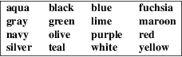

djvumake − Assemble DjVu image files.
djvumake djvufile [chkid=argument]...
Program
djvumake assembles a single-page DjVu file
djvufile by copying or creating chunks according to
the provided arguments. Supported arguments are as follows:
INFO=w,h,dpi
Create the initial information chunk. Arguments w, h, and dpi describe the width, height and resolution of the image. All arguments may be omitted. The default resolution is 300 dpi. The default width and height will be retrieved from the first mask chunk specified in the command line options.
Sjbz=jb2file
Create a JB2 foreground mask chunk. File jb2file may contain raw JB2 data, or be a DjVu file containing JB2 data such as those produced by program cjb2.
Smmr=mmrfile
Create a MMR/G4 foreground mask chunk. File mmrfile may contain raw MMR data or be a DjVu file containing MMR data.
BG44=iw44file[:n]
Create one or more IW44 background chunks. File iw44file must contain IW44 data. Such files can be obtained by compressing the background image with program c44 and extracting the raw IW44 data using program djvuextract. The optional argument n indicates the number of chunks to copy from the IW44 file. Omitting the number of chunks copies all available chunks.
BGjp=jpegfile
Create a JPEG encoded background chunk. File jpegfile must contain JPEG encoded data.
BG2k=jpegfile
Create a JPEG-2000 background chunk. File jpegfile must contain JPEG-2000 encoded data. The DjVu decoder does not yet display files containing JPEG-2000 data.
FGbz=(filename|{#color[:x,y,w,h]})
Create a foreground color chunk describing one solid color for each JB2 encoded mark. The argument can be the name filename of a file containing the raw data. Such files are best created using program djvuextract(1). Alternatively the argument could describe a sequence of color zones. Each color zone specifies a color name color, and optionally the coordinates x,y,w,h of a rectangle. Each mark receives the color of the last color zone whose rectangle intersects the bounding box of the mark. The mark is painted black if its bounding box does not intersect one of the zones. The rectangle coordinates are expressed in pixels with the origin at the bottom left corner of the page. The full page is assumed when no rectangle coordinates are specified. Color names can be specified with exactly six hexadecimal digits, e.g. FGbz=#FF8080, or by one of the following sixteen HTML color names defined by the W3C, e.g. FGbz=#red.

FG44=iw44file
Create a IW44 foreground color chunk. File iw44file must contain IW44 data. Such files can be obtained by compressing the background image with command c44 and extracting the raw IW44 data using program djvuextract. Only the first chunk is copied.
FGjp=jpegfile
Create a JPEG foreground color chunk.
FG2k=jpegfile
Create a JPEG-2000 foreground color chunk. The DjVu decoder does not yet display files containing JPEG-2000 data.
INCL=fileid
Create a DjVu3 include chunk pointing to the component file named fileid. The resulting file should then be included into a multipage document using command djvm.
Djbz=jb2file
Create a JB2 shape dictionary. File jb2file must contain raw JB2 data describing a JB2 dictionary.
PPM=ppmfile
Create a IW44 background chunk and a IW44 foreground color chunk by masking and subsampling the PPM file ppmfile.
Assume, for instance, that we have a PPM image myimage.ppm and an identically sized PBM bitonal image mymask.pbm whose black pixels indicate which pixels belong to the foreground. Such a bitonal file might have been obtained by thresholding or color-keying the PPM image. We can then produce a DjVuDocument image using the following two commands:
|
cjb2 mymask.pbm mymask.djvu |
djvumake my.djvu Sjbz=mymask.djvu PPM=myimage.ppm
The DjVu specification documents in the directory doc of the DjVuLibre distribution provide the authoritative information about the composition of a legal DjVu image file.
This program was written by Léon Bottou <leonb@users.sourceforge.net> and was then improved by Andrei Erofeev <andrew_erofeev@yahoo.com>, Bill Riemers <docbill@sourceforge.net> and many others.
djvu(1), djvuextract(1), cjb2(1), c44(1)